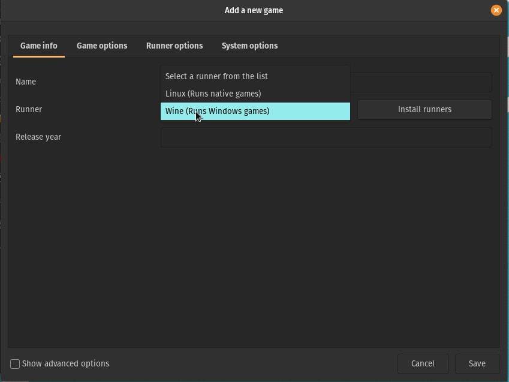
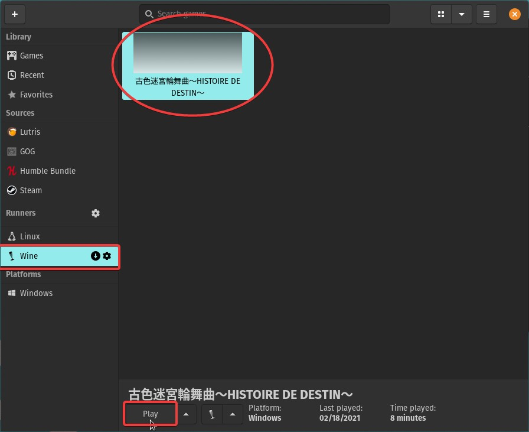
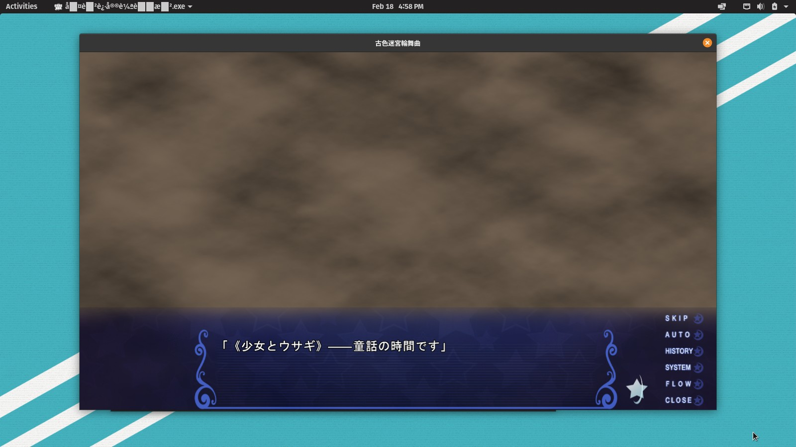

Visual novels on Linux¶
Visual novels are Microsoft Windows-only programs, therefore you must use Wine in order to run them on Linux. This works exceptionally well in most cases.
Follow the steps below.
Linux dependencies
The Linux dependency section has been updated for most distros, but the openSUSE and Gentoo parts have been left untouched. When following another distro's instructions, make sure you install ffmpeg and the listed gstreamer plugins.
Install Wine & dependencies¶
You will need to enable [multilib] and [extra] before running this command. To do this, uncomment the [multilib] and [extra] section in /etc/pacman.conf.
Next, install yay then run the following command.
yay -S wine-staging winetricks ffmpeg lib32-ffmpeg alsa-plugins lib32-alsa-plugins alsa-lib lib32-alsa-lib libjpeg-turbo lib32-libjpeg-turbo libxcomposite lib32-libxcomposite libxinerama lib32-libgcrypt libgcrypt lib32-libxinerama ocl-icd lib32-ocl-icd libxslt lib32-libxslt libva lib32-libva gst-plugins-base lib32-gst-plugins-base gst-plugins-good lib32-gst-plugins-good gst-plugins-bad lib32-gst-plugins-bad gst-plugins-ugly lib32-gst-plugins-ugly vulkan-icd-loader lib32-vulkan-icd-loader lib32-openssl gst-libav lib32-gst-libav
This may look like a lot of "bloat" but for older games especially, you will need all of these.
Optionally, for some VNs, you might want CDEmu which tricks VNs into thinking that the original disc is inserted so it'll let you play the game.
sudo pacman -S cdemu-client cdemu-daemon
In order to use CDEmu, you need to install the VHBA module.
sudo pacman -S vhba-module
Custom and LTS Kernels
If you are using a custom or LTS kernel, install vhba-module-dkms. Otherwise, install vhba-module.
The CDEmu service is loaded with the kernel module.
If drivers for CD/DVD drives are not automatically loaded, you can load it manually.
sudo modprobe -a sg sr_mod vhba
First you will need to enable 32-bit architecture.
sudo dpkg --add-architecture i386
sudo mkdir -pm755 /etc/apt/keyrings
sudo wget -O /etc/apt/keyrings/winehq-archive.key https://dl.winehq.org/wine-builds/winehq.key
sudo wget -NP /etc/apt/sources.list.d/ https://dl.winehq.org/wine-builds/ubuntu/dists/kinetic/winehq-kinetic.sources
Other Ubuntu Versions
If you use a different version of Ubuntu or a derivative like Linux Mint you must do this instead. Replace kinetic with the codename of the Ubuntu version you use. This one is for 22.04 and Linux Mint 21.x:
sudo wget -NP /etc/apt/sources.list.d/ https://dl.winehq.org/wine-builds/ubuntu/dists/jammy/winehq-jammy.sources
Update packages:
sudo apt update
sudo apt-get install --install-recommends winehq-stable -y
sudo apt-get install libgnutls30:i386 libldap-2.4-2:i386 libgpg-error0:i386 libxml2:i386 libasound2-plugins:i386 libsdl2-2.0-0:i386 libfreetype6:i386 libdbus-1-3:i386 libsqlite3-0:i386 libgstreamer-plugins-base1.0-0:i386 libgstreamer-plugins-good1.0-0:i386 libgstreamer-plugins-bad1.0-0:i386 libgudev-1.0-0:i386 ocl-icd-dev:i386 -y
Now we need to install winetricks manually because the one on the repository already is outdated and causes errors.
First, wget the binary:
wget https://raw.githubusercontent.com/Winetricks/winetricks/master/src/winetricks
chmod to make it into an executable:chmod +x winetricks
/usr/bin so it can be used in a command line.sudo cp winetricks /usr/bin
Optionally, for some VNs, you might want CDEmu which tricks VNs into thinking that the original disc is inserted so it'll let you play the game.
Add PPA's for CDEmu:
sudo add-apt-repository ppa:cdemu/ppa -y
sudo apt update
sudo apt install cdemu-client cdemu-daemon gcdemu vhba-dkms
These instructions are for Debian 11 Bullseye. On Debian Testing, replace all instances of bullseye with bookworm in the commands to add repositories.
First you will need to enable 32-bit architecture.
sudo dpkg --add-architecture i386
sudo mkdir -pm755 /etc/apt/keyrings
sudo wget -O /etc/apt/keyrings/winehq-archive.key https://dl.winehq.org/wine-builds/winehq.key
sudo wget -NP /etc/apt/sources.list.d/ https://dl.winehq.org/wine-builds/debian/dists/bullseye/winehq-bullseye.sources
Optionally, for some VNs, you might want CDEmu which tricks VNs into thinking that the original disc is inserted so it'll let you play the game. You will need the Deb Multimedia repository for CDEmu.
Using wget, get its GPG keyring:
wget https://www.deb-multimedia.org/pool/main/d/deb-multimedia-keyring/deb-multimedia-keyring_2016.8.1_all.deb
sudo dpkg -i deb-multimedia-keyring_2016.8.1_all.deb
deb http://www.deb-multimedia.org bullseye main
contrib and non-free to your main repository line in /etc/apt/sources.list if you haven't done so already.Example:
deb http://deb.debian.org/debian bullseye main contrib non-free
Now finally update package repositories:
sudo apt update
Now install all the needed packages, including Wine, CDEmu and other Wine dependencies.
sudo apt install --install-recommends winehq-stable dbus-x11 libmirage-plugins gcdemu cdemu-client cdemu-daemon libgnutls30:i386 libldap-2.4-2:i386 libgpg-error0:i386 libxml2:i386 libasound2-plugins:i386 libsdl2-2.0-0:i386 libfreetype6:i386 libdbus-1-3:i386 libsqlite3-0:i386 libgstreamer-plugins-base1.0-0:i386 gstreamer1.0-plugins-good:i386 libgstreamer-plugins-bad1.0-0:i386 libgudev-1.0-0:i386 ocl-icd-dev:i386 -y
And install Lutris using the deb package from their GitHub release page. Download the version with the tag Latest.
Now we need to install winetricks manually because the one on the repository already is outdated and causes errors.
First, wget the binary:
wget https://raw.githubusercontent.com/Winetricks/winetricks/master/src/winetricks
chmod to make it into an executable:chmod +x winetricks
/usr/bin so it can be used in a command line.sudo cp winetricks /usr/bin
sudo apt install vhba-dkms
For this you will need to have the RPM Fusion repositories added. If you haven't already added them you can do so with these commands:
sudo dnf install https://mirrors.rpmfusion.org/free/fedora/rpmfusion-free-release-$(rpm -E %fedora).noarch.rpm https://mirrors.rpmfusion.org/nonfree/fedora/rpmfusion-nonfree-release-$(rpm -E %fedora).noarch.rpm
sudo dnf groupupdate core
Install Wine, Winetricks and other dependencies you're gonna need for many VNs.
sudo dnf install wine winetricks alsa-plugins-pulseaudio.i686 glibc-devel.i686 glibc-devel libgcc.i686 libX11-devel.i686 freetype-devel.i686 libXcursor-devel.i686 libXi-devel.i686 libXext-devel.i686 libXxf86vm-devel.i686 libXrandr-devel.i686 libXinerama-devel.i686 mesa-libGLU-devel.i686 mesa-libOSMesa-devel.i686 libXrender-devel.i686 libpcap-devel.i686 ncurses-devel.i686 libzip-devel.i686 lcms2-devel.i686 zlib-devel.i686 libv4l-devel.i686 libgphoto2-devel.i686 cups-devel.i686 libxml2-devel.i686 openldap-devel.i686 libxslt-devel.i686 gnutls-devel.i686 libpng-devel.i686 flac-libs.i686 json-c.i686 libICE.i686 libSM.i686 libXtst.i686 libasyncns.i686 liberation-narrow-fonts.noarch libieee1284.i686 libogg.i686 libsndfile.i686 libuuid.i686 libva.i686 libvorbis.i686 libwayland-client.i686 libwayland-server.i686 llvm-libs.i686 mesa-dri-drivers.i686 mesa-filesystem.i686 mesa-libEGL.i686 mesa-libgbm.i686 nss-mdns.i686 ocl-icd.i686 pulseaudio-libs.i686 sane-backends-libs.i686 tcp_wrappers-libs.i686 unixODBC.i686 samba-common-tools.x86_64 samba-libs.x86_64 samba-winbind.x86_64 samba-winbind-clients.x86_64 samba-winbind-modules.x86_64 mesa-libGL-devel.i686 fontconfig-devel.i686 libXcomposite-devel.i686 libtiff-devel.i686 openal-soft-devel.i686 mesa-libOpenCL-devel.i686 opencl-utils-devel.i686 alsa-lib-devel.i686 gsm-devel.i686 libjpeg-turbo-devel.i686 pulseaudio-libs-devel.i686 pulseaudio-libs-devel gtk3-devel.i686 libattr-devel.i686 libva-devel.i686 libexif-devel.i686 libexif.i686 glib2-devel.i686 mpg123-devel.i686 mpg123-devel.x86_64 libcom_err-devel.i686 libcom_err-devel.x86_64 libFAudio-devel.i686 libFAudio-devel.x86_64
This may look like a lot of "bloat" but for older games especially, you will need all of these.
After that you can install all necessary multimedia codecs.
sudo dnf install gstreamer1-plugins-base-devel gstreamer1-devel.i686 gstreamer1.i686 gstreamer1-plugins-base.i686 gstreamer1-devel gstreamer1.i686 gstreamer1-devel gstreamer1-plugins-base-devel.i686 gstreamer1-plugins-base.x86_64 gstreamer1.x86_64 gstreamer1-devel.i686 gstreamer1-plugins-base-devel gstreamer1-plugins-base-devel.i686 gstreamer1-plugins-bad-free-devel.i686 gstreamer1-plugins-bad-free-extras.i686 gstreamer1-plugins-good-extras.i686 gstreamer1-plugin-libav gstreamer1-plugin-libav.i686 gstreamer1-plugins-bad-freeworld.i686
Problem: conflicting requests
If you get an error message mentioning conflicting requests and ffmpeg-free, you'll need to replace it with the FFmpeg from RPM Fusion's repositories by running this command:
sudo dnf install ffmpeg --allowerasing
Optionally, for some VNs, you might want CDEmu which tricks VNs into thinking that the original disc is inserted so it'll let you play the game.
Enable the rok/cdemu COPR repository:
sudo dnf copr enable rok/cdemu
Make sure the kernel development package is installed.
sudo dnf install kernel-devel
Install CDEmu daemon and clients:
sudo dnf install cdemu-daemon cdemu-client gcdemu
Now load the VHBA kernel module:
sudo akmods
sudo systemctl restart systemd-modules-load.service
Tested on openSUSE Tumbleweed 20210408
sudo zypper install wine winetricks lutris cdemu-client cdemu-daemon gstreamer-plugins-good gstreamer-plugins-good-32bit gstreamer-plugins-base gstreamer-plugins-base-32bit gstreamer-plugins-libav gstreamer-plugins-libav-32bit gstreamer-plugins-bad gstreamer-plugins-bad-32bit gstreamer-plugins-ugly gstreamer-plugins-ugly-32bit libgudev-1_0-0 libgudev-1_0-0-32bit libSDL2-2_0-0 libjpeg-turbo
sudo modprobe -a sg sr_mod vhba
Make sure your kernel is compiled with the following options enabled:
CONFIG_BLK_DEV_SRCONFIG_ISO9660_FSCONFIG_UDF_FSCONFIG_IA32_EMULATION(for 32 bit support)
and that you have a multilib setup.
It is recommended to have the following global use flags in your make.conf:
Xpulseaudiojpegpng
Refer to the gentoo wiki for more information on different verions of wine available on gentoo here. wine-vanilla should be able to run almost everything fine . Be sure that the flag abi_x86_32 is not turned off FOR wine-vanilla (it's on by default), more info visit the wiki here.
Install the deps.
sudo emerge -v app-emulation/wine-vanilla virtual/wine games-util/lutris app-cdr/cdemu app-emulation/winetricks
Load the vhba module for cdemu
sudo modprobe vhba
To autoload the module on startup, edit your /etc/conf.d/modules file and add this line:
modules="vhba"
In order for the CDEmu daemon to be started automatically by the UI, you will need to have dbus enabled. You can enable it by running:
sudo rc-update add dbus default
## or if systemd the default init
sudo systemctl enable dbus
Enable the multilib and nonfree repositories if you haven't already.
sudo xbps-install -S void-repo-nonfree void-repo-multilib void-repo-multilib-nonfree
Next, install the necessary Linux dependencies.
sudo xbps-install -S wine wine-32bit winetricks ffmpeg libavcodec-32bit libavfilter-32bit libavformat-32bit libavresample-32bit libavutil-32bit libpostproc-32bit libswresample-32bit libswscale-32bit alsa-lib alsa-lib-32bit alsa-plugins alsa-plugins-32bit alsa-plugins-ffmpeg alsa-plugins-ffmpeg-32bit gst-plugins-base1 gst-plugins-base1-32bit gst-plugins-good1 gst-plugins-good1-32bit gst-plugins-bad1 gst-plugins-bad1-32bit gst-plugins-ugly1 gst-plugins-ugly1-32bit gst-libav gst-libav-32bit Vulkan-Headers Vulkan-ValidationLayers Vulkan-ValidationLayers-32bit vulkan-loader vulkan-loader-32bit lutris
If you need something to mount disc images, run sudo xbps-install -S cdemu-client. When you need to use it, launch cdemu-daemon in a terminal before using the commands listed later in the guide.
Configure Wine and install runtimes¶
Creating the Wineprefix¶
First off, create a clean 32-bit Wine prefix. While a 64-bit prefix generally runs 32-bit programs well enough, you can run into unexpected problems (e.g. SafeDisc-protected games only work under 32-bit).
WINEPREFIX=~/.winevn WINEARCH=win32 wineboot
Using winetricks¶
Now we need to install the common redistributables such as DirectX, Visual C++ Runtimes and .NET Framework 3.5 and other things that make video cutscenes work.
Optional: Font smoothing
You can do WINEPREFIX=~/.winevn winetricks fontsmooth=rgb because without it, the font is simply awful.
Optional: Filetype associations
Execute WINEPREFIX=~/.winevn winetricks mimeassoc=off to prevent Wine from taking over as the default application for some file formats.
Optional: GUI Improvements
You can open the Registry Editor using WINEPREFIX=~/.winevn wine regedit and import this .reg file, the GUI should look nice and clean then.
First you need to get the latest patches for Winetricks or else this will not work.
sudo winetricks --self-update
Vulkan Unsupported Systems
Most GPUs made in the last decade should support Vulkan. If you have a system that does not support it, remove dxvk from the end of the following command. If you already installed it to the Wine prefix you can remove it by following the instructions here.
WINEPREFIX=~/.winevn winetricks -q dotnet35 vcrun2003 vcrun2005 vcrun2008 vcrun2010 vcrun2012 vcrun2013 vcrun2015 lavfilters alldlls=default quartz dxvk
You'll be installing Windows Media Player 10 next. As it's not easy to uninstall, you should make a copy of your prefix in its current state somewhere.
After that, run the following command.
WINEPREFIX=~/.winevn winetricks -q wmp10
As the last step, set the renderer to GDI to get around issues with cinematics.
WINEPREFIX=~/.winevn winetricks renderer=gdi
Renderer
The GDI option exists mostly for legacy purposes.
While the other renderers are more efficient, Wine tends to crash or skip videos without alerting you when using them. As such, the guide opts for using GDI as the baseline.
If you experience any problems like low performance or black screens try running winetricks renderer=gl and only falling back to GDI if you can't progress otherwise.
Japanese fonts in Wine¶
You need to install Japanese fonts to Wine now. Please download the pack below.
[Google Drive]
Unzip the file and move the font files to your Fonts folder in ~/.winevn/drive_c/windows/Fonts.
Why not install cjkfonts in winetricks?
Because it doesn't work properly for VNs.
Lutris initial setup¶
Environment Variables¶
Once that's done, we can set up Lutris.
Open Lutris, and click the plus icon in the top left corner, and click Install runners.

Scroll down to the bottom and find "Wine" and click the cog icon next to it.

Now go to System options and set the environment variables as shown below and click Save.
- Key:
LC_ALLValue:ja_JP.UTF-8 - Key:
TZValue:Asia/Tokyo

Vulkan Unsupported Systems
If your system does not support Vulkan, you must disable DXVK in "Runner options", this will fallback to regular D3DX9. DXVK is a Vulkan implementation of Direct3D so we will be keeping it on even though Vulkan may not make much of a difference.
Installing the visual novel¶
I will be using HISTOIRE DE DESTIN for this demonstration. Visual Novels usually come in .ISO files and if not, an .MDS/.MDF file which can be mounted with cdemu.
Mounting disc images¶
Navigate to the path of the disc image:
cd /path/to/visualnovelfolder
MDS
Load the .MDS file with CDEmu first. The Linux mount command will not mount it.
cdemu load 0 /path/to/mds_image.MDS
UDF Volumes
Load the UDF volume with CDEmu. The Linux mount command with the -t udf argument is not advised.
cdemu load 0 /path/to/udf_volume
CDEmu Mount Point?
It should usually be in /run/media/user/image_name
If using a regular ISO9660 ISO file create a mount point for it.
sudo mkdir -p /media/cdrom0
sudo mount -o loop file.ISO /media/cdrom0
ls /media/cdrom0 or whatever your mount point is:

Running the installer¶
Localegen
Generate the ja_JP.UTF-8 locale first.
Next, we will run the setup file using wine:
LC_ALL="ja_JP.UTF-8" TZ="Asia/Tokyo" WINEPREFIX=~/.winevn wine <setup_executable>.exe
.msi installer
If the installer executable is an .msi, run with msiexec instead of wine.
Proceed with the installation. The game may be installed in ~/.winevn/drive_c/Program Files or wherever you chose to install it.
Adding to Lutris¶
Now we can add the game to Lutris so we can launch it quickly.
Back in Lutris, click the plus icon in the corner, add the name of the VN, choose Wine as the runner and under "Game Options" navigate to the game's executable. You should also change the prefix architecture to 32-bit.


Wine prefix in Lutris
Forgot to include this in the picture, but make sure to set the Wine prefix in Lutris too by adding ~/.winevn to the Wine prefix field.
AlphaROMdiE
For AlphaROMdiE, you need to add AlphaROMdiE to Lutris as the executable, and the filename .exe of the Visual Novel as an argument. If you are using Wine in a command line it should look something like this:
LC_ALL="ja_JP.UTF-8" TZ="Asia/Tokyo" WINEPREFIX=~/.winevn wine AlphaROMdiE.exe <VN_executable.exe>
disable_conv in the same location as AlphaROMdiE.exe, for the 3rd option, you must create an empty file other_engine in the same location as AlphaROMdiE.exe. You can do this easily by doing:
touch disable_conv other_engine
Now you can just launch it in Lutris!

Error:
Load the .ISO image with cdemu. Even though Linux can mount ISO9660 images without CDEmu, Wine programs cannot seem to find the mounted image.
cdemu load 0 /path/to/image.ISO
and voila!

Now go back to Visual Novel Guide to learn how to use Textractor, it works perfectly under Wine. Also consider adding Textractor to Lutris for quick access.
Linux: Troubleshooting¶
Glitchy videos¶
If you experience videos breaking in some way like playing upside-down, try running them in the prefix from before installing wmp10.
As video support in Wine varies greatly, there's no real silver bullet solution that works for everything. Make sure to experiment - some VNs work fine without Windows Media Player but others won't (e.g. Yuzusoft VNs like Sanoba Witch will skip without it).
Though that's less likely, LAVFilters might also play a factor in some cases - if something goes wrong run wine control and try uninstalling it.
Shift-JIS¶
Credit: Broken Dragon Translation
Do this when you've done everything correctly but your VN text still looks like this: ????? ?????????? ???????????? You don't usually need to do this. This means your VN needs to use ja_JP.sjis instead of ja_JP.UTF-8.
You need to download ja_JP.sjis from here first.
Extract it to a memorable location on your computer and cd into that directory.
cd /path/to/ja_JP.sjis
Now compile the locale using localedef:
localedef -i ja_JP -f SHIFT_JIS ./ja_JP.sjis --no-warnings=ascii
Using sed, edit your locale.gen
sed -i '/ja_JP.UTF-8 UTF-8/a ja_JP.SJIS SHIFT_JIS ' /etc/locale.gen
locale-gen
Type in:
sudo sed -i '/ja_JP.UTF-8 UTF-8/a ja_JP.SJIS SHIFT_JIS ' /etc/default/libc-locales
Then run:
sudo xbps-reconfigure -f glibc-locales
You can then change the LC_ALL environment variable in Lutris to ja_JP.sjis.
Fuguriya VNs¶
VNs made by Fuguriya such as Sono Hanabira ni Kuchizuke o and Hanahira may not launch with Wine by default. Follow the steps below to fix this.
Download fjfix [here].
Extract the archive.
Now in the terminal, run:
LC_ALL=ja_JP.UTF-8 WINEPREFIX=~/.winevn wine fjfix.exe -f /path/to/MGD
Now it should just work.